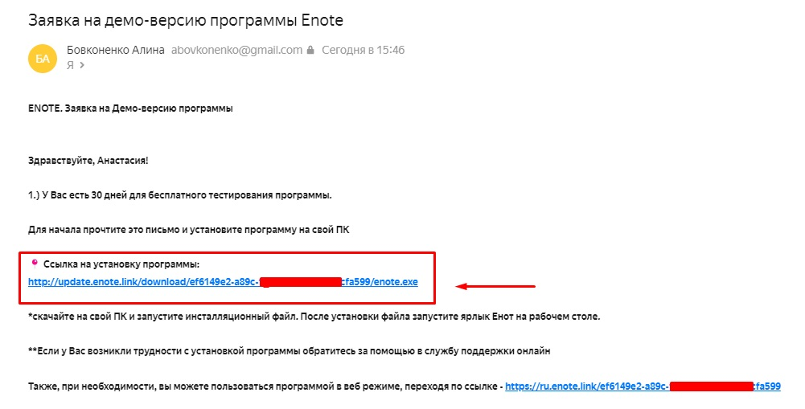
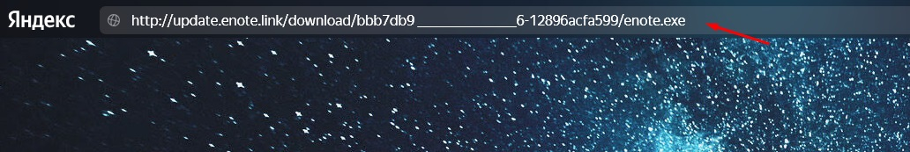
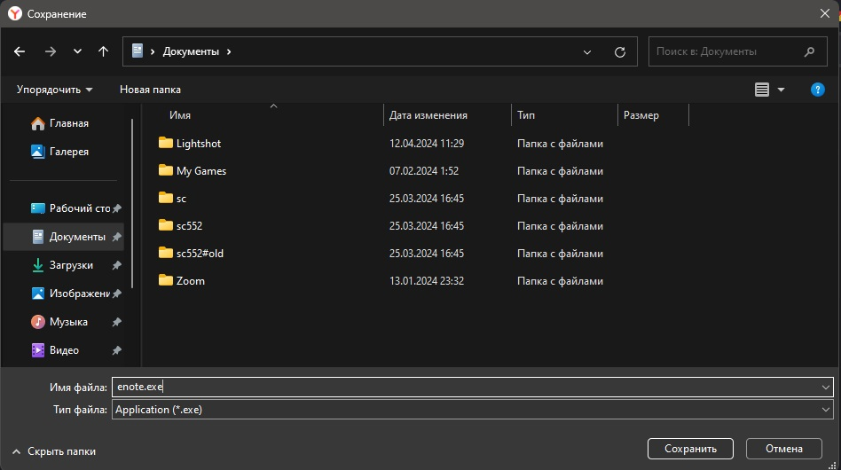
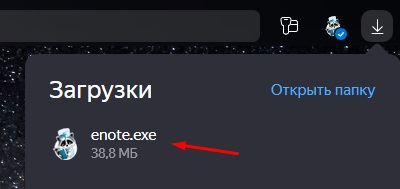
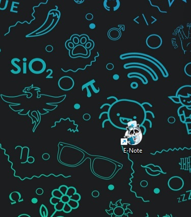
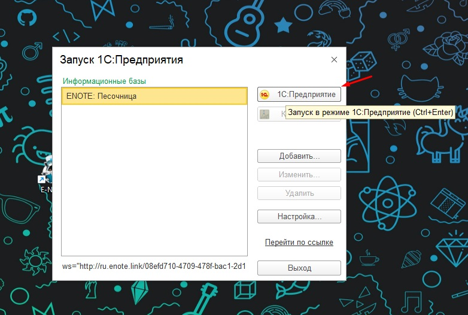
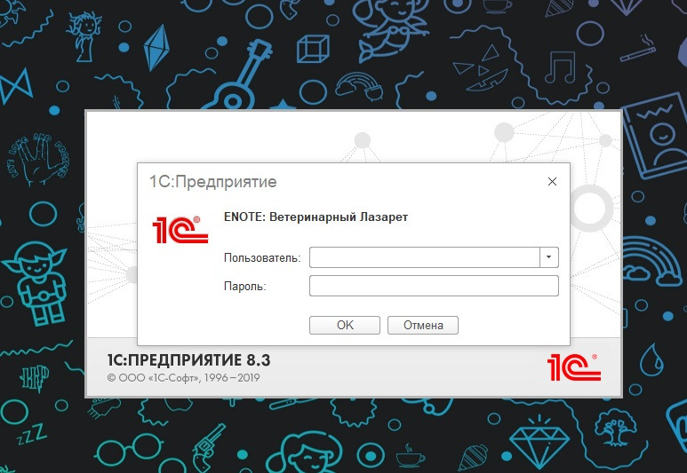
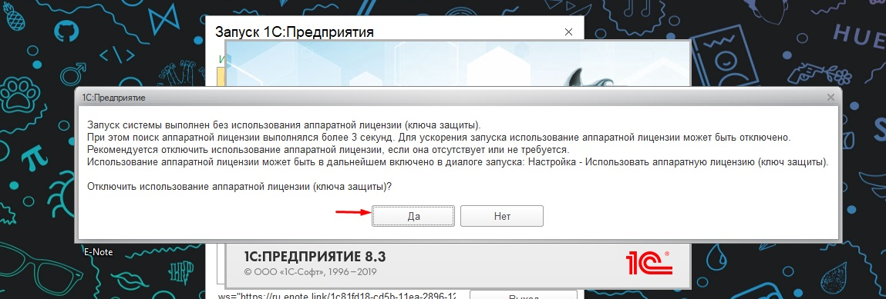

Технические характеристики
Тонкий клиент 1с
Процессор Intel Pentium Celeron 2700 Мгц и выше
Оперативная память 4 Гбайт и выше
Жесткий диск 40Гб и выше
Видеокарта, поддерживающая монитор с минимальным разрешением 1280x768 точек
Подключение к сети интернет
WEB версия
Процессор Intel Pentium Celeron 2700 Мгц и выше
Оперативная память 4 Гбайт и выше
Жесткий диск или твердотельный накопитель
Видеокарта, поддерживающая монитор с минимальным разрешением 1280x768 точек
Подключение к сети интернет
Как установить Enote на Ваш пк
1. В письме от менеджера, которое он Вам направит в начале демо периода будет ссылка на скачивание файла установки

2. Выделите ссылку, скопируйте и вставьте в строку браузера. Начнётся загрузка установщика.

3. Выберите папку для сохранения файла установки и нажмите "сохранить"

4. Запустите скачаный файл по окончании загрузки

5. Дождитесь окончания установки Енот на Ваш пк
6. На рабочем столе появится ярлык Енот, запустите его

7. Выберите Вашу базу и нажмите "1С:Предприятие"

8. Введите логин и пароль указанные в письме от менеджера

9. Енот не использует аппаратный ключ защиты, нажмите "да"
